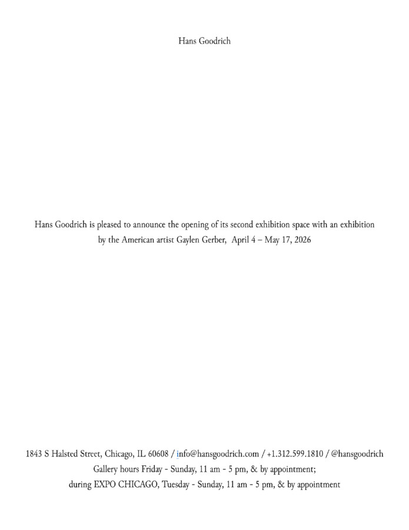

Gaylen Gerber
Hans Goodrich is pleased to announce the opening of its second exhibition space with an exhibition by the American artist Gaylen Gerber, April 4 – May 17, 2026
1843 S Halsted Street, Chicago, IL 60608 / info@hansgoodrich.com / +1.312.599.1810 / @hansgoodrich
Gallery hours Friday – Sunday, 11 am – 5 pm, & by appointment; during EXPO CHICAGO, Tuesday – Sunday, 11 am – 5 pm & by appointment